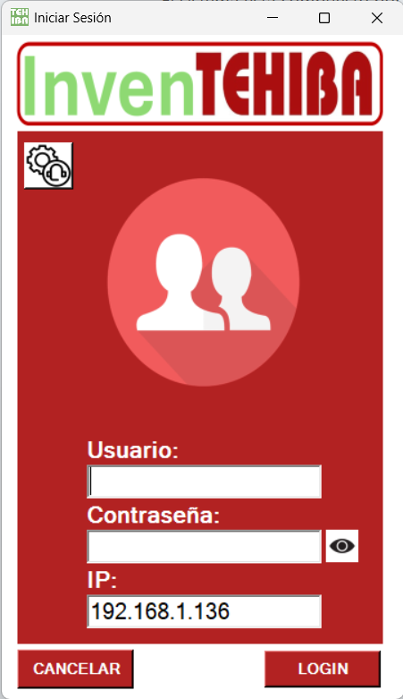
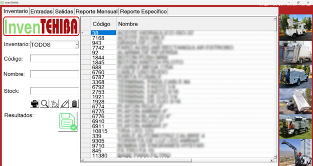
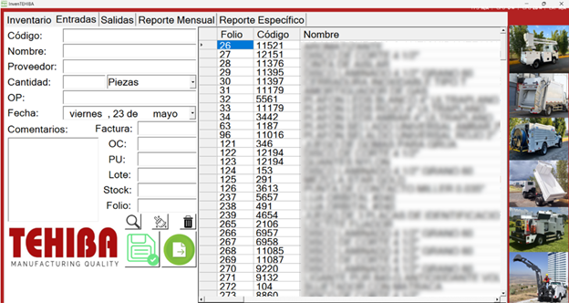
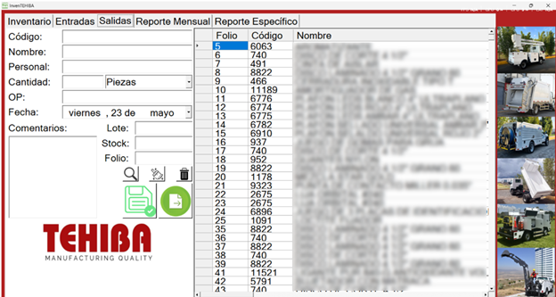
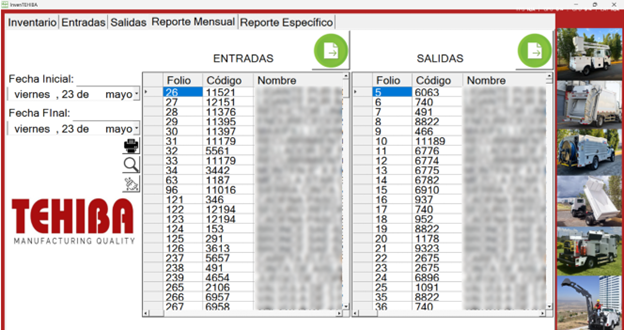
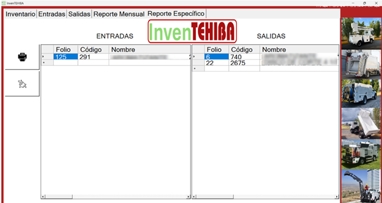
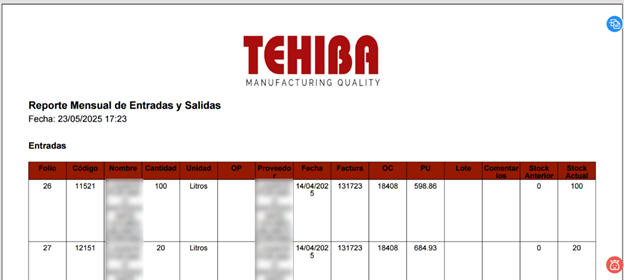

Project Overview
Tech Stack: VB.NET, Excel, VBA
This system was developed using VB.NET with Excel as a database, designed for small businesses with limited infrastructure. It enables efficient inventory management while maintaining portability and ease of deployment across different machines.
Key Features
- Authentication & Security: User login with username, password, and IP validation. Includes role-based access control to restrict actions such as editing or deleting records.
- Inventory Management: Registration and tracking of materials such as parts, consumables, and tools. Includes filtering, search by code or name, and detailed report generation.
- Stock In: Recording incoming materials with auto-complete by code, supplier data, quantity, unit, production order, date, batch, and comments. Automatic folio generation.
- Stock Out: Recording material distribution to staff with automatic stock updates.
- Reporting: Overview of all transactions with filtering by date, PDF export, and integration with detailed reporting.
- Custom Reports: Generation of reports based on operation type, multiple date ranges, and non-consecutive periods, useful for audits and tracking.
This system was successfully implemented in a real production environment, reducing inventory errors and improving material traceability while maintaining a simple and accessible solution using Excel as the data layer.
Gallery






